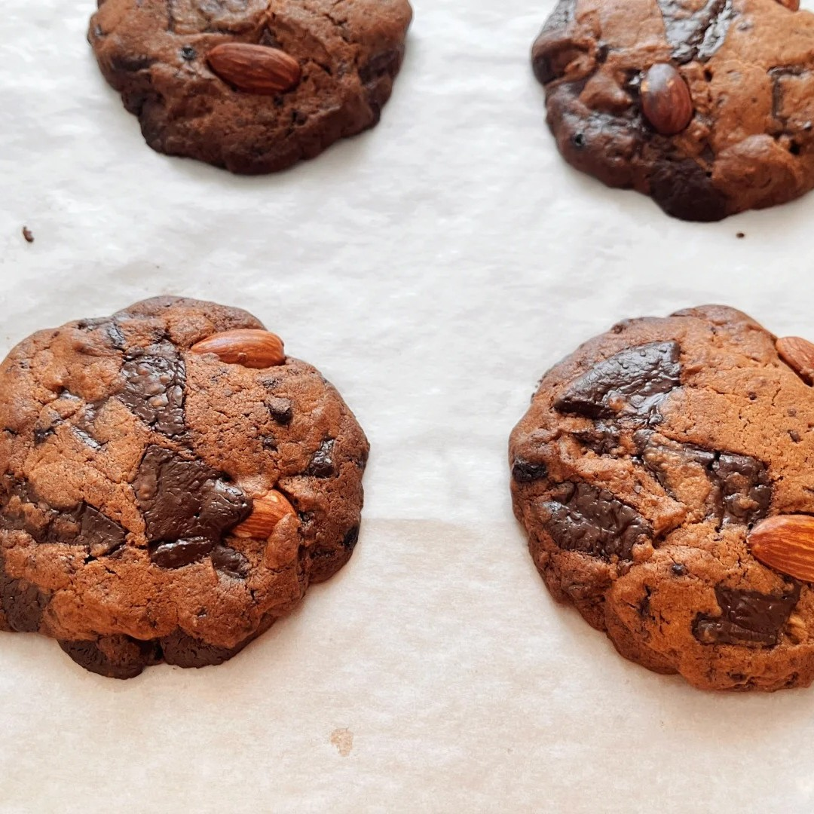
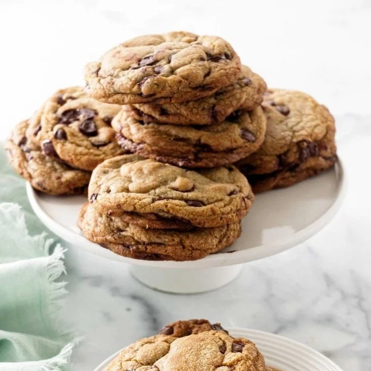

巧克力奇普



巧克力奇普是以中筋面粉、黑巧克力为主料制作的烘焙食品，属于饼干及曲奇类点心，外文名为Chocolate Chip Cookies。该产品采用黄油、红糖、白砂糖、鸡蛋等原料，通过打发黄油、混合干粉、冷藏静置及烘烤等工序制成，面团需冷藏1小时至36小时后再烘烤。巧克力奇普呈不规则块状，具有中间软韧、边缘微脆的口感特征，主要原料包含中筋面粉、黑巧克力碎块。制作时需将室温软化的黄油与糖类充分打发，分次加入蛋液混合，再拌入过筛后的粉类及巧克力豆，经烤箱180-190℃烘烤8-20分钟成型。部分配方使用焦化黄油或咖啡液提升风味，面团冷藏时间直接影响成品质构。作为美国家庭常见烘焙点心，其配方存在黄油打发程度、巧克力类型及冷藏时长等差异。